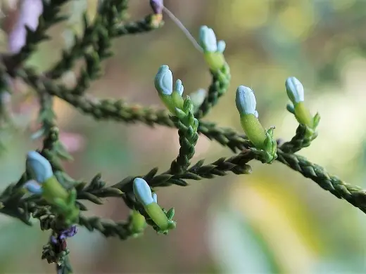

Kahikatea berries
Kahikatea berries is a wild fruit you can forage from March to May in Northland and Auckland, Central North Island, West Coast, Wellington and Manawatū and Top of the South. New Zealand's tallest tree, in swamp forests; each black seed sits on a juicy orange-red stalk (koroī).

When is kahikatea berries in season in New Zealand?
Kahikatea berries is usually in season March to May. Timing shifts with weather, latitude and altitude.
Where does kahikatea berries grow in New Zealand?
Kahikatea berries grows in Auckland, Bay of Plenty, Manawatū-Whanganui, Marlborough, Nelson, Northland, Taranaki, Tasman, Waikato, Wellington, West Coast. Regions: Northland and Auckland, Central North Island, West Coast, Wellington and Manawatū, Top of the South.
How do you recognise kahikatea berries?
New Zealand's tallest tree, in swamp forests; each black seed sits on a juicy orange-red stalk (koroī).
How do you harvest kahikatea berries?
Pick only fully ripe fruit that comes away easily, into a shallow container so it doesn't crush. Leave plenty on the plant for birds and wildlife.
How do you eat kahikatea berries?
Sweet orange stalks eaten fresh; discard the seed.
How do you store kahikatea berries?
Best fresh.
What is kahikatea berries good for?
Calories.